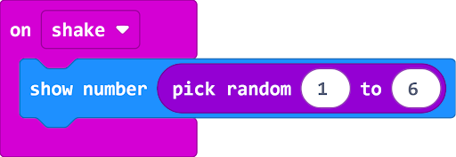
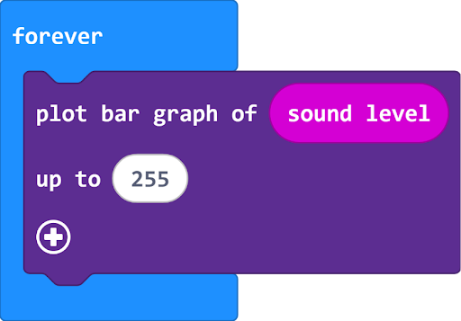
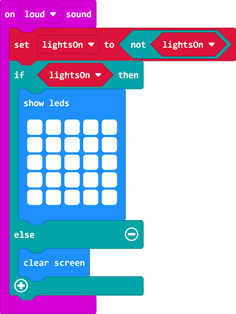
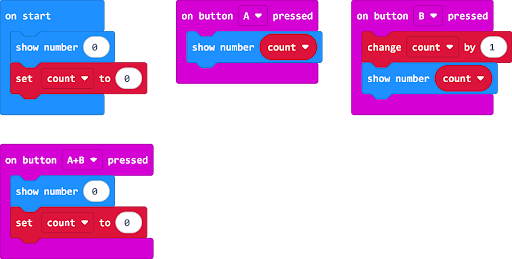
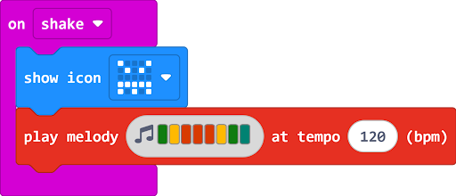

Resurse necesare: 1x micro bit ,MakeCode:

Resurse necesare: 1x micro bit ,MakeCode:

Resurse necesare: 1x MicroBit ,MakeCode:

Resurse necesare: 1x micro bit ,MakeCode:

Resurse necesare: 1x micro bit, MakeCode ,Baterie:
